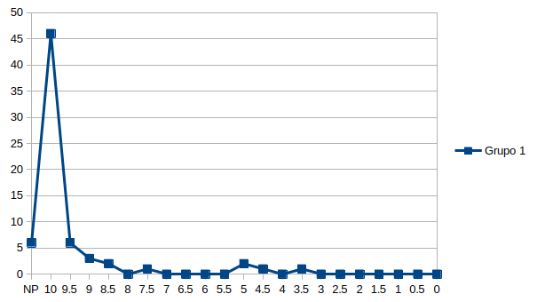
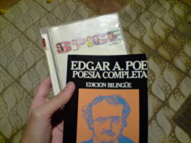
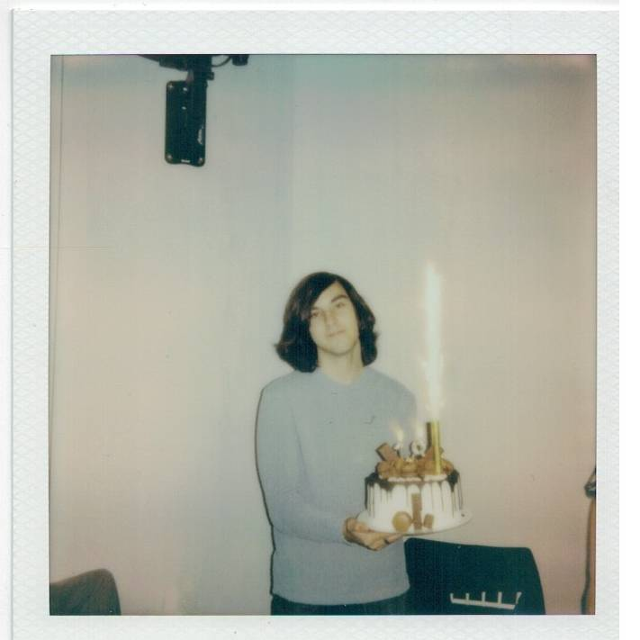
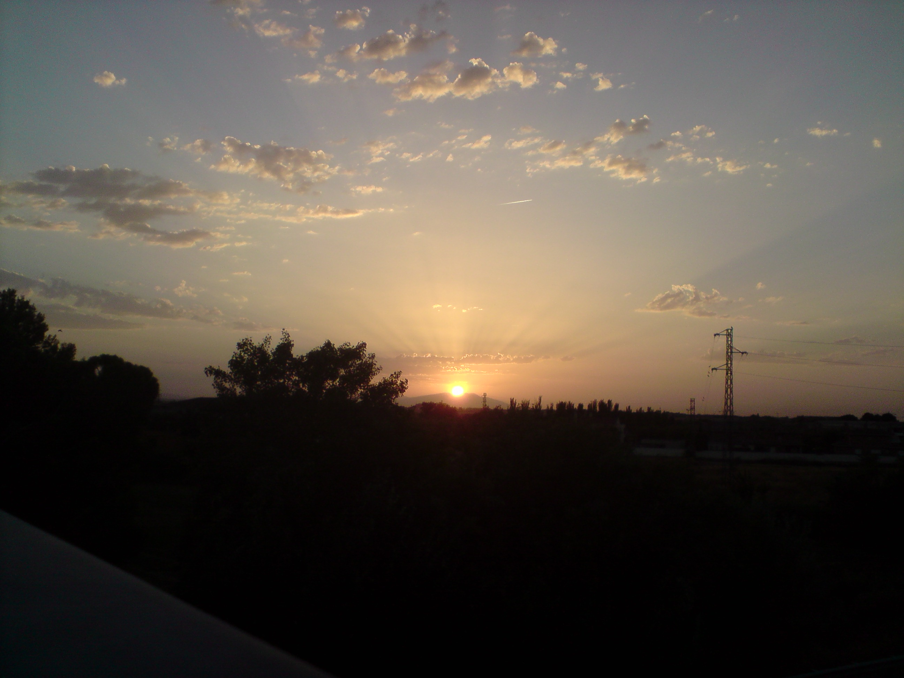
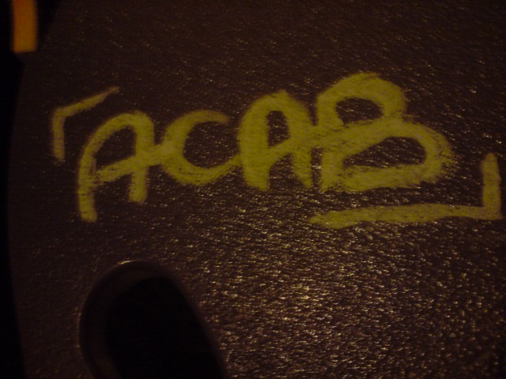
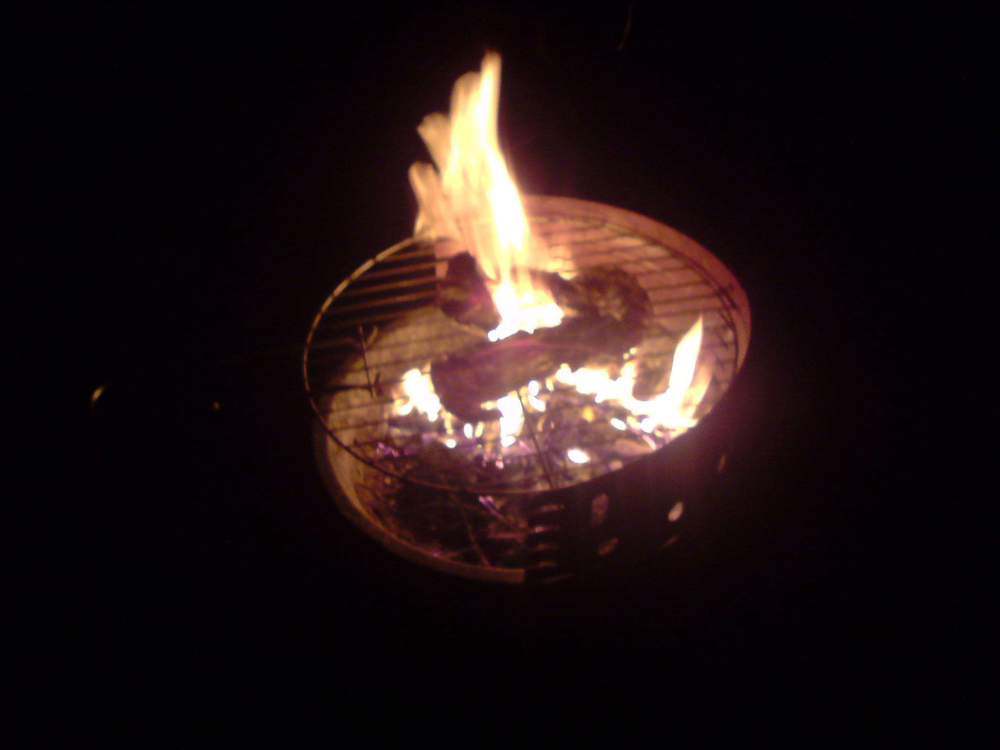
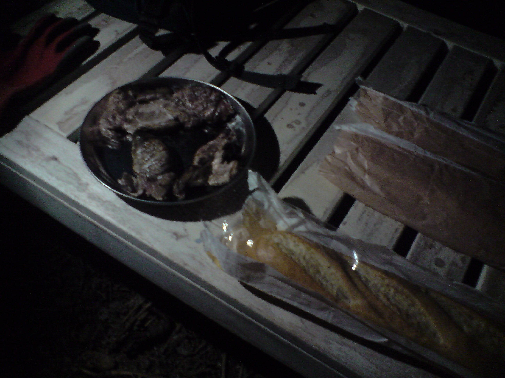
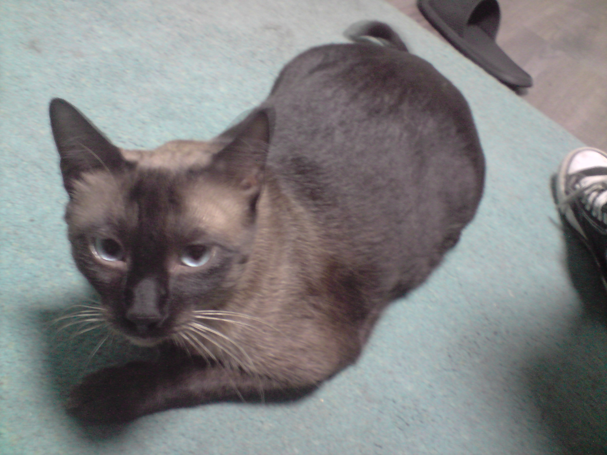

around midway through august i found my dad's old phone, from 2009. since then i've used it as a digital camera to take pictures when i am bored. here you'll find stuff that happens in my everyday life with some photographic proof if that's what i felt like on that day.
november 5th, 2026
performed my math analysis midterm today, it went mildly, time to pray. more interestingly, though, someone suggested to create a minecraft smp for the class, since us who have morning classes barely talk to afternoon students and vice versa, they said it'd be a nice way of socializing. 's fun. additionally, i bought to a session at a club, organized for science faculty students. to be honest, i've never really gone clubbing, so i am excited. though a friend has his birthday in december and can't attend though :(

november 2nd, 2026
i recieved my numbers and sets exam grade today, a 10; but considering that practically everyone got that grade, i suspect that the exam was too easy, i'll avoid lowering my guard and keep studying. still, a 10 :)
october 31st, 2026
went out on halloween with some friends, had a few shots and just fucked around for a while. the interesting part is that a majority of the friend group had huge infights a while ago, so it was quite awkward to have everyone together. despite that it was fun, everyone was dressed up.
october 29th, 2026
almost nothing interesting has happened in the past week. i got back my grade for the algebra exam, and i scored a 3. i'll have to study more, but truly almost nothing matters until the finals, so it's whatever. i've been studying for the numbers and sets exam that i took today, which went considerably better. again; we'll have to see the result.

october 23rd, 2026
i got a spice girls cd and edgar allan poe's poem collection at the library, i'm the most poseur ever. also a bird shat on my hair 3:<
october 22nd, 2026
12:00pm CEST
i just finished my first uni exam, it was linear algebra. 45 minutes to solve 7 questions is insane. regardless, i still think i managed to do pretty well, we will have to see the result.
10:00pm CEST
there have been certain protests; it could be assumed that someone allegedly participated in said protests, and said person could allegedly have been exposed to tear gas due to allegedly being on the front line of the black bloc, and they could have been allegedly escorted by other activists and been treated until being able to be autonomous again after more or less an hour (allegedly). it's been a propitious day.

october 18th, 2026
today is my birthday 🍰 and i already feel old. i don't have much of an attachment to birthdays, so i don't care a whole lot, but it makes me happy to be wished a good day by my friends and family.
by the way, the cake was fucking amazing.
october 17th, 2026
i finished writing the blog, nothing else interesting except for studying :3
october 14th, 2026
today was the birthday of two of my friends, who are twins. their mother planned out their birthday as a surprise, and none of us knew where they were taking us until we arrived to the laser tag enclosure. it was a counter strike based experience, and my team won 4-3.
october 10th, 2026
today i went to the carnival ferias del pilar, in valdespartera. i went with 4 friends and i had plans to go with more, but they couldn't arrive before i had to go. i rode on 2 attractions and had fun.
october 4th, 2026
during the morning i went to the flea market with a friend from class (i bought a casino roulette), at noon i celebrated my little cousin's birthday. it was also one of my best friend's birthday, but this friend lives abroad so we couldn't celebrate :(
october 1st, 2026
today i made the first prototype for this website. no notes :p

september 25th, 2026
image captured from atop of a bridge during sunset, and honestly, i do not recall anything that happened that day, since this is written a posteriori on the day october 24th of 2026. but it is really pretty :)

september 6th, 2026
a small graffiti i found on a trash can in the nearby town, don't have much to say that isn't already told by the text.


september 3rd, 2026
we bought a few pork loins and baguettes and when dusk came we went to the abandoned house to have barbecue, 'twas dry but fine.

august 27th, 2026
i took this picture sometime after arriving home from a hangout, peepo was already asleep when i arrived and he was so tired, but made the effort to come to my room and greet me when i arrived :) so cute
august 26th, 2026
this was a random stray i found beside a small lake with some ducks. it let me pet it and was very friendly; even laid down and purred beside me.